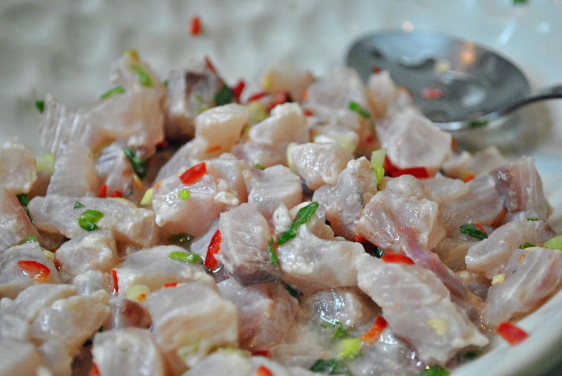
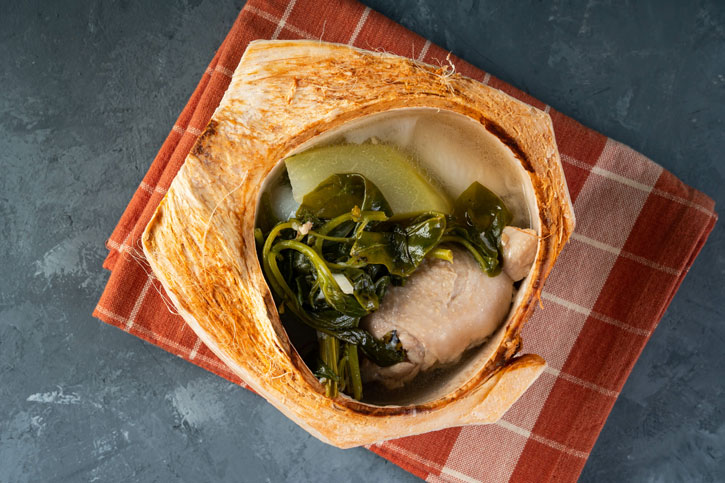

Pork Adobo
Ingredients
- 2 lbs pork belly or shoulder, cut into chunks
- 1 cup soy sauce
- 1 cup vinegar (cane or white vinegar)
- 1 head garlic, minced
- 1 onion, sliced
- 2-3 bay leaves
- 1 tsp black peppercorns
- 1 tbsp sugar (optional)
- 1-2 cups water
- 1-2 tbsp cooking oil
- Salt and pepper, to taste
- Chopped green onions or hard-boiled eggs (for garnish)
Instructions
- Marinate pork with soy sauce, garlic, and bay leaves for at least 30 minutes.
- Sauté onions in oil until translucent.
- Add marinated pork, browning on all sides.
- Add reserved marinade and vinegar; do not stir for 5 minutes.
- Add water, peppercorns, and sugar. Simmer for 45 minutes or until tender.
- Serve hot, garnished with green onions or eggs if desired.
Kinilaw
Ingredients
- 1 lb fresh fish (tuna or mackerel), diced
- 1/2 cup cane vinegar
- 1/4 cup calamansi or lime juice
- 1 medium onion, chopped
- 2-3 medium tomatoes, diced
- 1-2 green chilies, sliced
- 1/4 cup ginger, chopped
- Salt and pepper, to taste
- 1/4 cup coconut milk (optional)
Instructions
- Marinate fish in vinegar for 10-15 minutes until it changes color.
- Combine marinated fish with calamansi juice, onion, tomatoes, ginger, and chilies.
- Season with salt and pepper; fold in coconut milk if using.
- Serve chilled, garnished with cilantro or green onions.
Chicken Binakol
Ingredients
- 1 lb chicken (bone-in, cut into pieces)
- 2 cups coconut water (fresh preferred)
- 1 cup young coconut meat, shredded
- 1 onion, chopped
- 2-3 cloves garlic, minced
- 1 thumb-sized piece of ginger, sliced
- 2-3 green chilies
- Salt and pepper, to taste
- 2-3 tbsp fish sauce (optional)
- Chopped green onions or cilantro (for garnish)
Instructions
- Sauté onion, garlic, and ginger in oil until fragrant.
- Add chicken; cook until browned on all sides.
- Pour in coconut water, bring to a boil, then simmer for 20-30 minutes until chicken is tender.
- Stir in coconut meat and chilies; season with salt, pepper, and fish sauce. Simmer for 5-10 minutes.
- Serve hot, garnished with green onions or cilantro, with rice.
Pork Sinigang
Ingredients
- 1 lb pork (bone-in, cut into pieces)
- 2 cups water or broth
- 1 onion, chopped
- 2-3 cloves garlic, minced
- 1 thumb-sized piece of ginger, sliced
- 2-3 green chilies
- Salt and pepper, to taste
- 2-3 tbsp fish sauce (optional)
- Chopped green onions (for garnish)
Instructions
- Sauté onion, garlic, and ginger in oil until fragrant.
- Add pork; cook until browned.
- Pour in water or broth; bring to a boil, then simmer until tender (about 20-30 minutes).
- Add chilies; season with salt, pepper, and fish sauce. Simmer for 5-10 minutes.
- Serve hot, garnished with green onions and enjoy with rice.